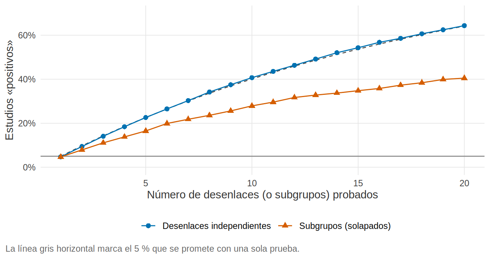

Preregistro, multiplicidad y análisis exploratorio frente a confirmatorio
El ensayo de bicarbonato no mostró efecto sobre el desenlace principal. Un coautor revisa la base y vuelve entusiasmado: «¡En mujeres mayores de 65 años con diabetes y albuminuria baja, el bicarbonato funciona! p = 0.03». Quiere ese hallazgo en el título del artículo. Nadie mintió ni inventó nada: solo miró 20 subgrupos y presentó el mejor. Este subcapítulo muestra, con una simulación en la que no hay ningún efecto real, por qué eso casi siempre «funciona», cómo se corrige y cómo se evita (con un plan registrado antes de mirar).
Lo que vamos a hacer
- Simular el jardín de senderos bifurcados: cuántos estudios «positivos» salen cuando no hay efecto y se prueban 20 desenlaces o 20 subgrupos.
- Corregir la multiplicidad (Bonferroni, Holm, Benjamini-Hochberg) y medir su costo en potencia.
- Ver cómo se registra un estudio, cómo se rotula lo exploratorio y cómo se reportan las desviaciones del protocolo.
Paso 1: el jardín de senderos bifurcados
Un valor p < 0.05 se acepta como evidencia porque, si no hay efecto, ocurre en 1 de cada 20 pruebas. Esa promesa vale para una prueba. Si pruebas 20 cosas distintas y presentas la que «sale», el error ya no es del 5 %. Gelman y Loken (2013) llamaron a esto el jardín de senderos bifurcados: cada decisión del análisis (qué desenlace, qué subgrupo, qué covariables, qué exclusiones) abre un camino, y quien camina por los datos tiende a quedarse con el que da un resultado, sin intención de hacer trampa. Simmons, Nelson y Simonsohn (2011) mostraron que esa flexibilidad no declarada hace de los falsos positivos la regla, no la excepción.
Lo simulamos. Todos los datos son simulados y el efecto verdadero es cero en todos los desenlaces y subgrupos. Primero, estudios con 20 desenlaces independientes (por ejemplo, 20 variables de laboratorio), 64 pacientes por grupo; calculamos en cada estudio el menor valor p entre los primeros k desenlaces:
set.seed(2026)
n_est <- 5000
P <- p_desenlaces(n_est, n_por_grupo = 64, k = 20) # 5 000 estudios x 20 desenlaces, sin efecto real
min_acum <- apply(P, 1, cummin) # menor p entre los primeros k desenlaces
positivos <- tibble(k = 1:20, simulado = rowMeans(min_acum < 0.05), teorico = 1 - 0.95^k)
positivos |> filter(k %in% c(1, 5, 10, 20)) |> mutate(across(-k, \(x) round(x, 3)))# A tibble: 4 × 3
k simulado teorico
<int> <dbl> <dbl>
1 1 0.047 0.05
2 5 0.226 0.226
3 10 0.407 0.401
4 20 0.643 0.642Ahora, un solo desenlace y 20 subgrupos al azar (variables binarias sin relación con nada); en cada estudio de 300 pacientes se prueba el efecto del tratamiento dentro de cada subgrupo. Los subgrupos se solapan (comparten pacientes), así que las pruebas no son independientes:
S <- p_subgrupos(n_est = 1000, n_total = 300, k = 20) # 1 000 estudios x 20 subgrupos, sin efecto real
min_acum_s <- apply(S, 1, cummin)
positivos <- positivos |> mutate(subgrupos = rowMeans(min_acum_s < 0.05))
positivos |> filter(k %in% c(1, 5, 10, 20)) |> select(k, subgrupos) |> mutate(subgrupos = round(subgrupos, 3))# A tibble: 4 × 2
k subgrupos
<int> <dbl>
1 1 0.047
2 5 0.165
3 10 0.279
4 20 0.405positivos |>
pivot_longer(c(simulado, subgrupos), names_to = "tipo", values_to = "pct") |>
mutate(tipo = recode(tipo, simulado = "Desenlaces independientes", subgrupos = "Subgrupos (solapados)")) |>
ggplot(aes(k, pct, color = tipo, shape = tipo)) +
geom_hline(yintercept = 0.05, color = "grey55") +
geom_line(aes(y = teorico), color = "grey30", linetype = "dashed", linewidth = 0.4) +
geom_line() + geom_point(size = 2) +
scale_y_continuous(labels = scales::percent, limits = c(0, 0.7)) +
scale_color_manual(values = unname(paleta_libro[c("azul", "naranja")])) +
labs(x = "Número de desenlaces (o subgrupos) probados", y = "Estudios «positivos»",
caption = "La línea gris horizontal marca el 5 % que se promete con una sola prueba.")
Qué vemos. Con un desenlace, 4.7 % de los estudios salen «positivos», cerca del 5 % prometido. Con 20 desenlaces, 64 % (la teoría predice 64 %): casi dos de cada tres estudios sin ningún efecto real tendrían algo que contar. Con 20 subgrupos solapados la cifra es menor, 40 %, porque las pruebas se parecen entre sí, pero sigue siendo unas 8 veces el 5 % de partida. Nadie fue deshonesto: bastó con mirar muchas veces y presentar la mejor.
Veamos un estudio concreto. El primero de la simulación con al menos un p < 0.05 en los 20 desenlaces, con sus cinco valores p más bajos y su versión corregida (los métodos del Paso 2):
# A tibble: 5 × 5
desenlace p bonferroni holm bh
<int> <dbl> <dbl> <dbl> <dbl>
1 16 0.01 0.193 0.193 0.193
2 5 0.023 0.456 0.433 0.228
3 18 0.051 1 0.92 0.341
4 1 0.07 1 1 0.352
5 12 0.096 1 1 0.386Qué vemos. El mejor desenlace tiene p = 0.010: un «hallazgo». Pero entre 20 pruebas, el menor valor p esperado ya es pequeño (en la simulación, la mediana del menor p es 0.034). Corregido por Bonferroni, ese p se convierte en 0.193: deja de ser un hallazgo.
Paso 2: corregir la multiplicidad
La multiplicidad es hacer muchas pruebas y que el error se acumule. Hay dos «errores» que conviene distinguir:
- Error global (familywise error rate): la probabilidad de al menos un falso positivo entre todas las pruebas.
- Tasa de falso descubrimiento (FDR, false discovery rate): la proporción esperada de falsos entre los resultados que declaras positivos.
R trae p.adjust() con los métodos habituales:
- Bonferroni: multiplica cada p por el número de pruebas. Simple y conservador; controla el error global.
- Holm: igual de válido, pero un poco menos conservador (procede por pasos); casi siempre es preferible a Bonferroni.
-
Benjamini-Hochberg (
"BH"): controla la FDR, no el error global; se usa cuando hay muchas pruebas y aceptas algunos falsos entre los hallazgos (exploración, estudios genómicos).
Su costo es la potencia. Simulamos 2 000 estudios con 20 desenlaces, uno con un efecto verdadero de 0.5 desviaciones estándar (potencia de ~80 % con 64 por grupo) y 19 nulos:
# A tibble: 4 × 4
metodo error_global falsos_entre_hallazgos potencia
<chr> <dbl> <dbl> <dbl>
1 Sin corregir 0.639 0.422 0.798
2 Bonferroni 0.048 0.04 0.393
3 Holm 0.05 0.04 0.394
4 Benjamini-Hochberg 0.072 0.05 0.406n_sin <- power.t.test(delta = 0.5, power = 0.80, sig.level = 0.05)$n
n_bonf <- power.t.test(delta = 0.5, power = 0.80, sig.level = 0.05 / 20)$nQué vemos.
- Sin corregir: potencia de 80 %, pero la probabilidad de al menos un falso positivo es de 64 %, y 42 % de los «hallazgos» son falsos.
- Bonferroni y Holm devuelven el error global al 4.9 % y 5.0 %, pero la potencia cae a 39 %: se pierde la mitad de la capacidad de detectar el efecto verdadero. Para volver al 80 % con Bonferroni habría que pasar de 64 a 122 pacientes por grupo.
- Benjamini-Hochberg deja un error global algo mayor (7.2 %) porque no persigue ese objetivo, pero mantiene la proporción de falsos entre los hallazgos en 5.0 %.
No hay corrección gratis. Por eso la mejor defensa es reducir el número de pruebas antes de ver los datos: un desenlace principal, secundarios en orden jerárquico (se prueba el segundo solo si el primero fue significativo, sin costo de multiplicidad) y subgrupos limitados y justificados (23.4).
Paso 3: preregistrar
Preregistrar es dejar por escrito, en un lugar público y con fecha, qué vas a hacer antes de hacerlo. No elimina la flexibilidad, pero la hace visible: el lector puede comparar lo planeado con lo reportado.
- Ensayos clínicos: se registran antes de reclutar al primer participante; es un requisito de los comités editoriales que siguen las recomendaciones del ICMJE y de muchas normativas. Registros: ClinicalTrials.gov, ISRCTN y los registros regionales o nacionales que forman parte de la red de la OMS (en América Latina, por ejemplo, ReBec en Brasil o RPCEC en Cuba; verifica cuál corresponde a tu país). El portal de la OMS (ICTRP) busca en todos.
- Estudios observacionales: no hay obligación general, pero se pueden preregistrar en OSF (Open Science Framework, osf.io), con plantillas de preregistro; muchos grupos depositan allí el protocolo y el SAP (23.4).
- Qué registrar: pregunta e hipótesis, población, desenlace principal (con definición y momento), tamaño de muestra, plan de análisis (o enlace al SAP), reglas de exclusión, subgrupos y análisis planeados.
El preregistro no es una camisa de fuerza: los datos reales obligan a veces a cambiar el plan. Lo que importa es que el cambio se vea (Paso 5).
Paso 4: rotular lo exploratorio
Explorar está bien: así se generan hipótesis. El problema aparece cuando una exploración se presenta como una confirmación. Para evitarlo:
- Separa en los métodos y en los resultados lo preespecificado (confirmatorio) de lo que se hizo después de ver los datos (exploratorio), con un encabezado distinto.
- En lo exploratorio, no hables de «demostrar» ni «confirmar»: usa «sugiere» y «genera la hipótesis de que…», y di que no se ajustó por multiplicidad.
- Cuenta todo lo que probaste. «Se evaluaron 20 subgrupos; este fue el único con p < 0.05» es honesto; presentar solo ese no lo es.
- No escribas la hipótesis después de ver el resultado y la presentes como si fuera previa: eso es HARKing (hypothesizing after the results are known). Si el hallazgo fue una sorpresa, dilo.
Una frase útil para el artículo: «Este análisis no estaba preespecificado, no se corrigió por multiplicidad y debe considerarse generador de hipótesis».
Paso 5: reportar las desviaciones del protocolo
Todo estudio real se desvía del plan en algo: un desenlace secundario cambia de medición, el reclutamiento termina antes, el modelo no converge. Las guías de reporte (CONSORT, SPIRIT, 23.1) piden decir qué cambió y por qué. Una tabla de desviaciones, que va en un apéndice (los ejemplos son hipotéticos), basta:
tribble(
~Fecha, ~`Qué cambió`, ~`Por qué`, ~`¿Antes de ver datos del desenlace?`, ~`Impacto esperado`,
"2025-03", "Se añadió el centro como factor de ajuste", "Se descubrió que la aleatorización fue estratificada por centro", "Sí", "Bajo; alinea el análisis con el diseño",
"2025-09", "El desenlace secundario «albuminuria» se mide a los 6 y no a los 12 meses", "Cambió el calendario de visitas por logística", "Sí", "Menor potencia del secundario",
"2026-02", "Análisis de sensibilidad añadido: imputación múltiple", "Más pérdidas a 12 meses de las previstas", "No (se vio el patrón de pérdidas, no el efecto)", "Se informa también el análisis original"
) |> knitr::kable()| Fecha | Qué cambió | Por qué | ¿Antes de ver datos del desenlace? | Impacto esperado |
|---|---|---|---|---|
| 2025-03 | Se añadió el centro como factor de ajuste | Se descubrió que la aleatorización fue estratificada por centro | Sí | Bajo; alinea el análisis con el diseño |
| 2025-09 | El desenlace secundario «albuminuria» se mide a los 6 y no a los 12 meses | Cambió el calendario de visitas por logística | Sí | Menor potencia del secundario |
| 2026-02 | Análisis de sensibilidad añadido: imputación múltiple | Más pérdidas a 12 meses de las previstas | No (se vio el patrón de pérdidas, no el efecto) | Se informa también el análisis original |
Tres reglas: describe qué, cuándo y por qué; di si el cambio fue antes o después de ver los resultados (la tercera columna es la que más le importa al lector); y presenta también el análisis originalmente planeado, no solo el nuevo. Si el estudio está registrado, actualiza el registro con fecha.
Trampas frecuentes
- «Es un subgrupo que ya sospechábamos». Si no está escrito con fecha antes de ver los datos, no cuenta como preespecificado.
- Corregir solo lo que no sale. La corrección por multiplicidad se aplica a la familia completa de pruebas, no a las que molestan.
- Confundir ausencia de significación con ausencia de efecto, y exploración con confirmación (Paso 4).
- Registrar después de ver los datos y llamarlo preregistro. La fecha y lo que no cambió son lo que lo vuelve creíble.
- Sin efecto real, 64 % de los estudios con 20 desenlaces tienen algo «significativo» (esperado: 64 %); con 20 subgrupos, 40 %. Nadie necesita hacer trampa: basta con mirar muchas veces.
-
p.adjust()corrige la multiplicidad: Bonferroni y Holm controlan el error global, BH la proporción de falsos hallazgos. Su costo en potencia es real (aquí, de 80 % a 39 %). - La mejor defensa es preespecificar: pocos desenlaces, jerarquía, subgrupos justificados y un plan registrado (ClinicalTrials.gov, ISRCTN, regionales; OSF para observacionales).
- Rotula lo exploratorio, cuenta todo lo que probaste y evita el HARKing.
- Las desviaciones del protocolo se reportan: qué, cuándo, por qué y si fue antes o después de ver los datos.
Ejercicio
- Cambia
k = 20pork = 5enp_desenlaces()y recalcula el porcentaje de estudios «positivos». ¿Coincide con1 - 0.95^5? - Con
simular_multiplicidad(d_verdadero = 0.8), ¿cuánto cuesta la corrección en potencia cuando el efecto verdadero es grande? ¿Y conk = 5desenlaces? - Redacta, para el escenario del inicio, la frase del artículo que presenta el subgrupo de «mujeres mayores de 65 con diabetes» como lo que es.
Referencias
- Simmons JP, Nelson LD, Simonsohn U. False-positive psychology: undisclosed flexibility in data collection and analysis allows presenting anything as significant. Psychol Sci. 2011;22:1359-1366.
- Gelman A, Loken E. The garden of forking paths: why multiple comparisons can be a problem, even when there is no “fishing expedition” or “p-hacking” and the research hypothesis was posited ahead of time (documento de trabajo, 2013).
- Schulz KF, Altman DG, Moher D. CONSORT 2010 Statement. BMJ. 2010;340:c332.
- Chan AW, Tetzlaff JM, Altman DG, et al. SPIRIT 2013 statement. Ann Intern Med. 2013;158:200-207.
- Registros: ClinicalTrials.gov, ISRCTN, plataforma ICTRP de la OMS y OSF Registries (osf.io/registries).